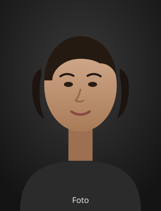

Aufnehmen
Ein Assistent zeigt dir, wohin du schauen sollst. Die App prüft Licht, Schärfe und Bewegung und speichert nur die wirklich guten Bilder.
Gesicht und Haare als detailreiches 3D-Modell – animierbar mit deiner Handykamera und exportierbar in alle gängigen Profi-Formate. Keine Cloud. Kein Konto. Keine Ausreden.

Drei Schritte
Die App führt dich. Du brauchst kein 3D-Wissen – nur eine Minute und gutes Licht.
Ein Assistent zeigt dir, wohin du schauen sollst. Die App prüft Licht, Schärfe und Bewegung und speichert nur die wirklich guten Bilder.
Aus bis zu 120 Bildern entsteht auf deinem Handy die 3D-Geometrie – Gesicht und Haare getrennt, damit beides richtig aussieht.
Du sagst, wofür du das Modell brauchst – FaceScan liefert das passende Format inklusive Texturen, Skelett und Mimik-Formen.
Ergebnis
Ziehe den Regler: links die Aufnahme, rechts das berechnete 3D-Modell.

Foto
3D-Modell
Platzhalter-Grafik – echte Beispielscans folgen mit der ersten Beta.
Funktionen
🧑
Getrennte Rekonstruktion für Haut und Haar – von der Pore bis zur Strähne, in drei ehrlichen Qualitätsstufen.
😀
52 Mimik-Formen (ARKit-Standard) plus Kopf- und Körperbewegung – live mit deiner Handykamera, ohne Marker und ohne ARCore.
📦
GLB, FBX, USD/USDZ, Alembic, OBJ, Collada, PLY, STL – mit Texturen, Skelett, Mimik und Animation.
🔒
Rechnung, Speicherung und Export auf dem Gerät. Verschlüsselter Tresor, kein Upload, kein Tracking.
🧭
Kein Fachwort ohne Erklärung. Ein Assistent, eine Ampel, ein Knopf – und ein Format-Ratgeber für dein Zielprogramm.
🛠️
Saubere Topologie, feste UVs, vollständige Material-Maps – gemacht für Blender, ZBrush, Maya oder Substance Painter.
Kompatibilität
FaceScan fragt dich, wofür du das Modell brauchst – und wählt Format, Einheiten, Achsen und Textur-Set passend dazu.
Dazu: Textur-Set mit Farbe, Detail-Relief, Rauigkeit, AO, SSS-Maske und Displacement (bis 8K), Einheiten und Achsen auf Wunsch für jedes Programm angepasst.
Animation
FaceScan erkennt deine Mimik und deine Körperbewegung live – auf dem Handy, ohne Anzug, ohne Marker, ohne ARCore. Nimm es auf und exportiere die Bewegung in BVH, Alembic, FBX oder USD.
Ziel: ≥ 25 Bilder pro Sekunde auf Mittelklasse-Handys.
Datenschutz
Dein Gesicht ist keine Ware. Deshalb arbeitet FaceScan konsequent lokal.
.fscan ist
dokumentiert: deine Daten bleiben lesbar, auch ohne uns.Preise
Bezahlt wird mit Solana, Bitcoin oder Ethereum – dafür gibt es dauerhaft die Crypto-Bonus-Kondition (keine Zahlungsdienstgebühren): −20 % gegenüber dem kalkulierten Kartenpreis.
0 € · privat
39 € · einmalig · Lifetime
129 € · einmalig · Lifetime
Credit-Packs (für Gelegenheitsnutzer, verfallen nicht): Export-Pack (10 Exporte) 4,90 € · Haar-Detail-Pack 3,90 € · Motion-Pack (30 Min.) 6,90 € · Druck-Paket 2,90 €. Alle Preise verstehen sich als EUR-Gegenwert; die Krypto-Menge wird zum Kurs am Zahlungstag berechnet.
Bezahlung
Keine Kreditkarte, kein Konto, keine Rückbuchungsdaten. Du zahlst direkt aus deinem Wallet an eine der drei Adressen. Wichtig: bitte sende immer genau den Betrag, den die App dir anzeigt – die letzten Stellen sind deine Bestellnummer.
Bestätigung in ~10 Sekunden, Cent-Gebühren, automatische Zuordnung.
79KsqtJJdhKFJ9woxnYgtf3nq7HxQveafWBCtC3mxWi8
Native SegWit (bech32). Bestätigung nach 1–3 Blöcken.
bc1qeqzrlfg3edrydk4s0hecakc82gp26n5p7hkc7f
Gasgebühren schwanken; Zuordnung über Betrag bzw. Transfer-Log.
0xBC3fab34f69bc9f6661608C3FB36dDdC313C42F7
Der Kauf läuft ausschließlich in der App: sie zeigt dir den exakten Betrag, einen
QR-Code und einen Direkt-Link zu deinem Wallet. Die Blockchain-Transaktion ist deine Quittung – damit
kannst du deinen Kauf jederzeit auf ein neues Handy mitnehmen.
Sicherheitshinweis: Prüfe vor dem Senden die ersten und letzten Zeichen der Adresse in
deinem Wallet. Wir kontaktieren dich niemals wegen „neuer" Adressen.
Wir übersetzen jedes Fachwort: Mesh = dein 3D-Modell (ein Netz aus Dreiecken). UV = die flachgelegte Verpackung, damit man es bemalen kann. Rig = das unsichtbare Skelett zum Bewegen. Jeder dieser Begriffe hat in der App ein „ⓘ Was ist das?".
Und beim Exportieren fragt FaceScan nicht nach einem Format, sondern nach deinem Ziel: „Blender", „Unreal", „3D-Druck", „Web" – den Rest erledigt die App.
Für Einsteiger
Sechs Minuten vom Öffnen der App bis zur fertigen Datei – das ist unser Versprechen aus den Usability-Tests.
FAQ
Android ab Version 10. Auf Mittelklasse-Geräten läuft der Standard-Scan in etwa drei Minuten, auf Flaggschiffen schneller. Ein Tiefensensor oder ARCore wird nicht benötigt.
Ehrlich: einzelne Haare aus Handy-Fotos zu rekonstruieren, schafft weltweit niemand verlässlich. FaceScan arbeitet deshalb in drei Stufen: Volumen (kostenlos), Haar-Karten mit Strähnenstruktur (Creator) und echte Strähnen-Kurven (Studio). Welche Stufe möglich ist, sagt dir die App vorher.
Ja. Scannen, Berechnen, Animieren und Exportieren laufen komplett auf dem Gerät. Netz braucht die App nur, wenn du etwas kaufen willst – und selbst dann bleibt sie voll nutzbar.
Sie bleiben auf deinem Handy, verschlüsselt im App-Tresor. Du entscheidest, ob die Quellbilder nach dem Scan behalten oder gelöscht werden. Es gibt keinen Upload und kein Konto.
Mit Creator für eigene kommerzielle Projekte bis 100.000 € Jahresumsatz, mit Studio unbegrenzt. Nicht erlaubt sind biometrische Identifikation, Überwachung sowie täuschende oder herabwürdigende Darstellungen – und du brauchst die Einwilligung der abgebildeten Person (dafür gibt es einen Model-Release-Generator in der App).
GLB, OBJ+MTL, PLY, STL (kostenlos), FBX, USD, USDZ, Collada (Creator), Alembic, BVH, VRM, CSV/JSON (Studio) – jeweils mit Textur-Set, auf Wunsch mit Skelett, Mimik-Formen und Animation.
FaceScan nutzt on-device Gesichts- und Körper-Erkennung: 478 Punkte im Gesicht, 52 Mimik-Werte, 33 Körper-Punkte in echten Metern. Daraus werden dein Avatar und seine Bewegung berechnet – ohne Marker, ohne Anzug, ohne Google-Play-Dienste.
Weil es zum Produkt passt: keine Konten, keine Kartendaten, keine Rückbuchungen, keine Zahlungsdienstleister in der Kette. Als Bonus geben wir die ersparten Gebühren als 20 % Rabatt weiter.
Ja. 14 Tage freiwillige Rückgabe an die Absenderadresse – abzüglich der Netzwerkgebühren. Schreib uns einfach mit deiner Transaktions-ID.
Es ist nach dem Android-Start geplant. Der Rechenkern ist in C++ geschrieben und kann wiederverwendet werden – Aufwand bleibt trotzdem, vor allem bei Kamera und Freigabe.
Roadmap
Du hast einen Wunsch? Schreib uns: hippie.highho@gmail.com
Kostenlos starten, offline bleiben, in alle Profi-Formate exportieren.